Отработка навыков цифровой обороны в симулированной среде.
Идентификация скрытых угроз. Отличите фишинговые ссылки от легитимных ресурсов.
НАЧАТЬ ТРЕНИРОВКУДинамическое построение обороны. Блокируйте потоки вредоносного кода правильными патчами.
НАЧАТЬ ТРЕНИРОВКУТекстовый квест. Пройдите через серию социальных манипуляций и сохраните свои средства.
НАЧАТЬ ТРЕНИРОВКУ